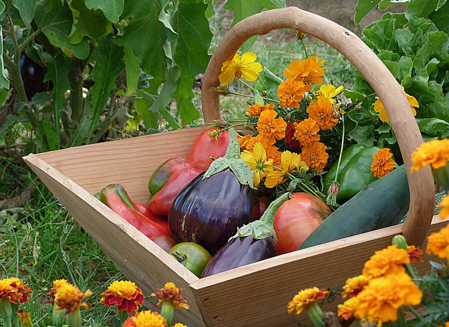

Faire son premier potager - Guide pour les débutants
Vous vous sentez l’âme d’un jardinier et souhaitez faire votre premier potager pour cultiver vos propres légumes ? Félicitations !
Quelle que soit votre motivation, de la fierté de produire vos propres légumes, sans engrais chimiques ni pesticides, pour trouver un moment de partage en famille ou entre amis, ou encore la volonté d’un retour à la nature, le plaisir de cuisiner de bons produits, de décompresser, voir même se dépenser en jardinant, cultiver son potager apporte bien des satisfactions.
Un potager se démarre généralement au printemps, L’automne est l’une de mes saisons préférées. Les températures se radoucissent, les arbres changent de couleur, le temps semble se ralentir. Les feuilles tombent. Les raclettes se préparent. Et la terre de votre potager n’attend plus que vous pour une nouvelle aventure !
Une erreur récurrente lorsque l’on débute est de vouloir semer ou planter au mauvais moment, soit trop tôt, soit trop tard. Or, chaque légume à ses exigences climatiques. Des graines semées trop tôt ne germent pas ou mal et se font concurrencer par les « mauvaises herbes », très dynamiques au printemps. Par ailleurs, si l’on plante trop tôt des plantes gélives, par exemple la tomate, la plante risque de végéter ou de mourir car elle aura subi un froid trop important.
Il est donc indispensable de se renseigner sur la meilleure période de semis et de plantation de chaque légume que vous allez cultiver. Rassurez-vous, pour de nombreux légumes vous pouvez semer et planter plusieurs mois dans l’année. C’est pourquoi je vous conseille de vous référer à notre calendrier de semis, à la fin de cet article.
Pour choisir l'emplacement votre potager il est important de chercher une place tranquille loin des mouvements de tes animaux ainsi que l'emplacement doit être le plus ensoleillé possible donc être orienté au Sud.
La bonne circulation de l’air est également importante, donc il faudrait que la zone soit bien aéré, mais idéalement protégé des vents dominants et froids.
Enfin, je vous conseille d’installer le potager sur un terrain plat ou légèrement en pente. Ce sera beaucoup plus simple pour cultiver des fruits ou légumes.
La superficie idéale dépendra avant tout de l’espace dont vous disposez.Quand on débute un potager, sans connaissance de la terre, sans savoir manier les outils, il est préférable de commencer petit !
Une superficie comprise entre 10 et 20m² me semble être une bonne base pour commencer un potager.
Avec le temps, les années et l’expérience, vous pourrez agrandir cet espace. C’est aussi le cas si vous changez d’objectif. Viser l’autosuffisance alimentaire demande forcément beaucoup plus de place.
que pouvez-vous faire pour obtenir la terre parfaite ?
--- L’ameublir et la décompacter : lorsque le terrain est à nu ou en jachère, vous devez l’ameublir. Et pour ça, rien de mieux qu’une grelinette. La grelinette est un outil de jardinage révolutionnaire bien que très simple à utiliser. Il vous suffit de la planter dans la terre en effectuant des mouvements de bascule pour soulever cette dernière. Pour l’aérer comme il faut, il suffit de progresser à reculons. La grelinette est efficace pour décompacter le sol sans le retourner en profondeur (action nuisible à la biodiversité).
--- L’amender : fumier, compost, marc de café, cendre… Les amendements organiques améliorent la structure et la composition de la terre. Notamment si elle est trop lourde ou trop acide.
--- Utiliser les engrais verts : en recouvrant votre terre de ces engrais naturels (légumineuses, moutarde, sarrasin, phacélie, etc.), vous l’enrichissez et améliorez sa qualité. Une fois fauchés, n’hésitez pas à laisser ces engrais se décomposer directement sur votre parcelle.
--- La pailler : pailler votre terre évite de la laisser à nue. De cette façon, vous la protégez de l’érosion (due au vent et au gel) et empêchez les adventices (mauvaises herbes) de pousser. Vous pouvez utiliser de la paille, des engrais verts, la tonte de votre pelouse, des feuilles mortes, du carton, etc.
Avant de commencer un potager directement avec votre pelle, je vous recommande vivement de réfléchir à l’aménagement de votre potager. Et pour ça, plusieurs choix vous sont proposés :
--- Le potager traditionnel : cette méthode consiste à cultiver des légumes en ligne droite. Il vous suffit de délimiter des planches de culture et de créer des allées. Vous pouvez les surélever ou non, c’est à vous de voir.
--- Le potager sur butte : la butte de culture est créée à l’aide de plusieurs composants (compost, terre, feuilles mortes, etc.) à même le sol. Il s’agit d’une méthode ancestrale, de plus en plus prisée par les jardiniers.
--- Le potager au carré : cette méthode vous permet de cultiver dans un espace carré, généralement délimité par 4 planches de bois. C’est à vous de définir les dimensions idéales.
La courgette, bien implantée et arrosée régulièrement sera productive tout l’été.
Les radis, sont très rapide à obtenir, en bonnes conditions il suffit d’un mois entre le semis et la récolte.
L'epinard, simple à réussir, tant qu’il a une terre riche et est bien arrosé.
menthe,persil, sont les plus simples à réussir
Le chou kale, est presque… inratable !
Les courges, (potirons, butternut etc…), une fois plantés dans une bonne terre ils donneront de généreuses récoltes !
La tomate, l’entorse de cette liste car elle est plus délicate à réussir.
La pomme de terre, est gratifiante… quand elle ne rencontre pas les doryphores et le mildiou !
La rhubarbe, est vivace, elle repousse chaque année sans problème.
L' echalot, est la plus facile à réussir dans sa famille des alliacées.